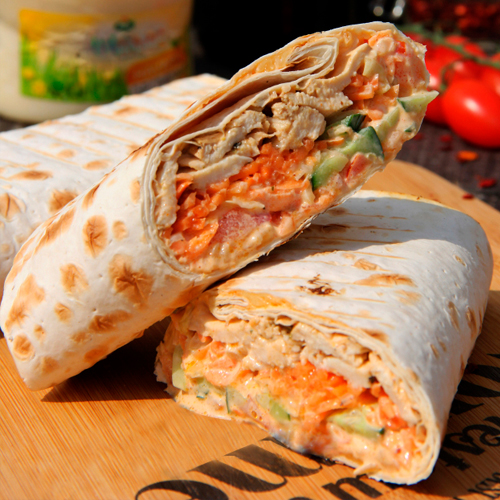

How to cook shawarma

Shawarma is a popular Middle Eastern street food made with marinated meat, vegetables, and sauces wrapped in flatbread. It is flavorful, juicy, and perfect for a quick meal.
Ingredients
- Flatbread (pita or lavash)
- 300 g chicken, beef, or lamb (thinly sliced)
- 2 tablespoons yogurt
- 1 tablespoon olive oil
- Salt and pepper
- Garlic sauce or tahini
- Fresh vegetables (tomatoes, cucumbers, onions, lettuce)
Steps
- Marinate the meat with yogurt, olive oil, cumin, paprika, salt, and pepper. Let it rest for at least 30 minutes.
- Cook the marinated meat in a hot skillet until fully cooked and slightly crispy.
- Warm the flatbread.
- Spread garlic sauce or tahini on the bread.
- Add cooked meat and fresh vegetables.
- Roll up the bread to form a wrap.
- Serve immediately while warm.
Home